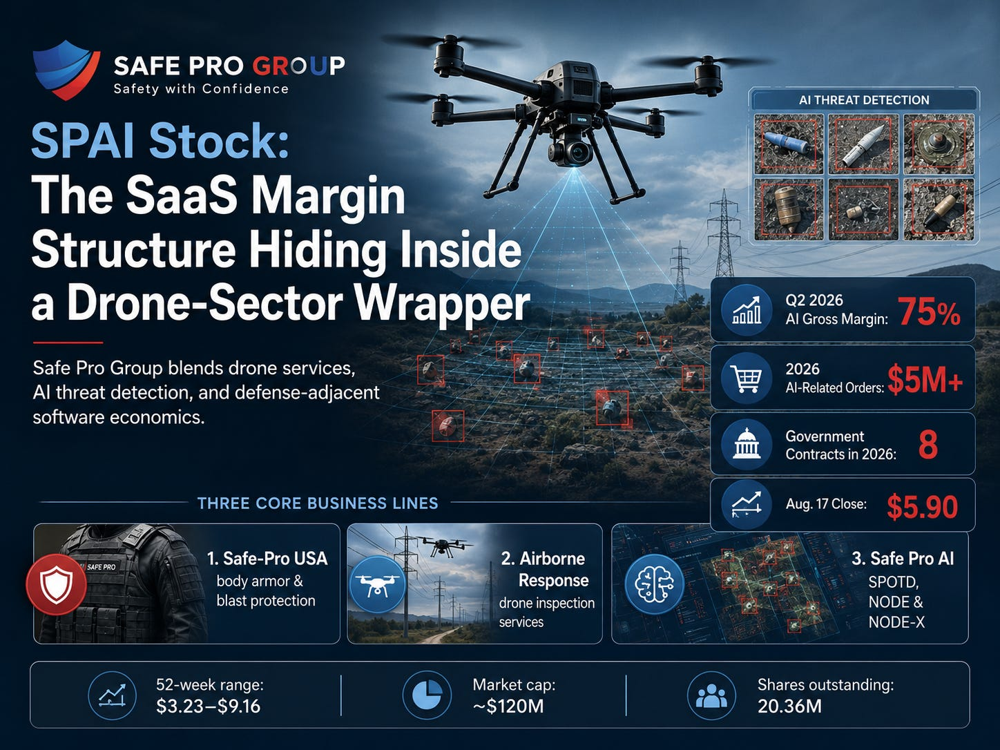
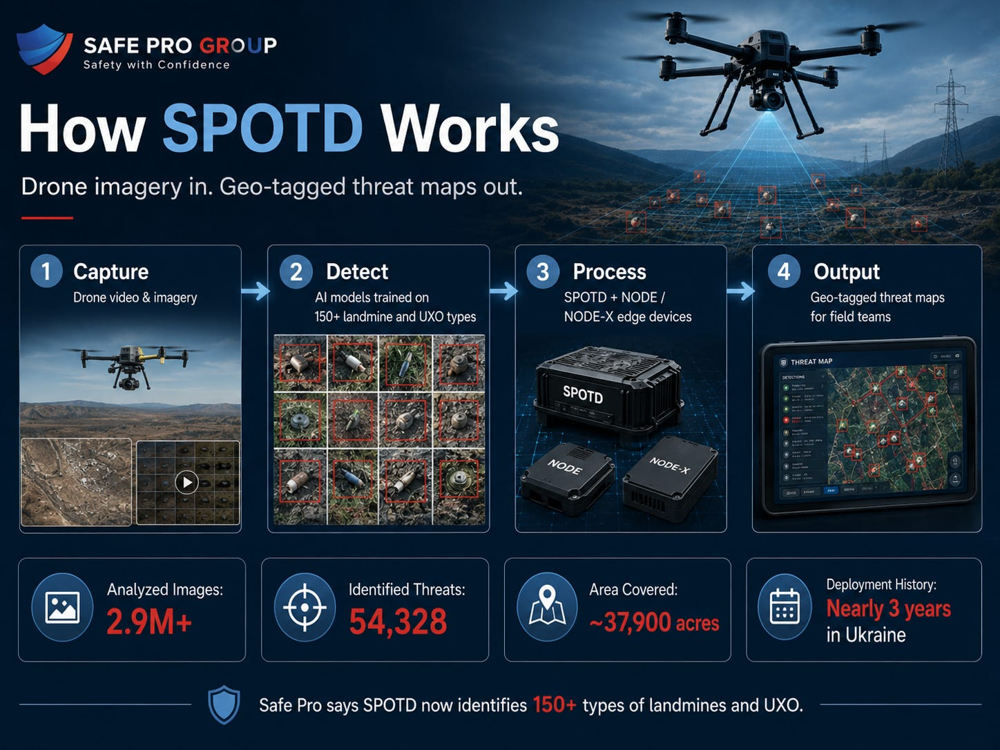
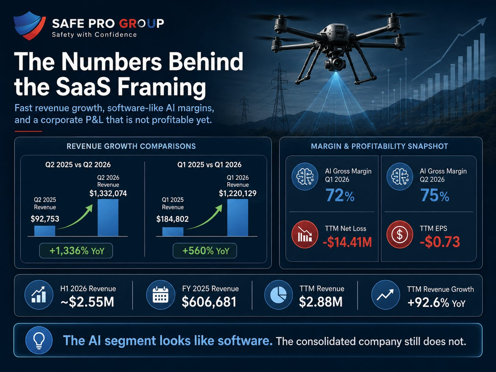
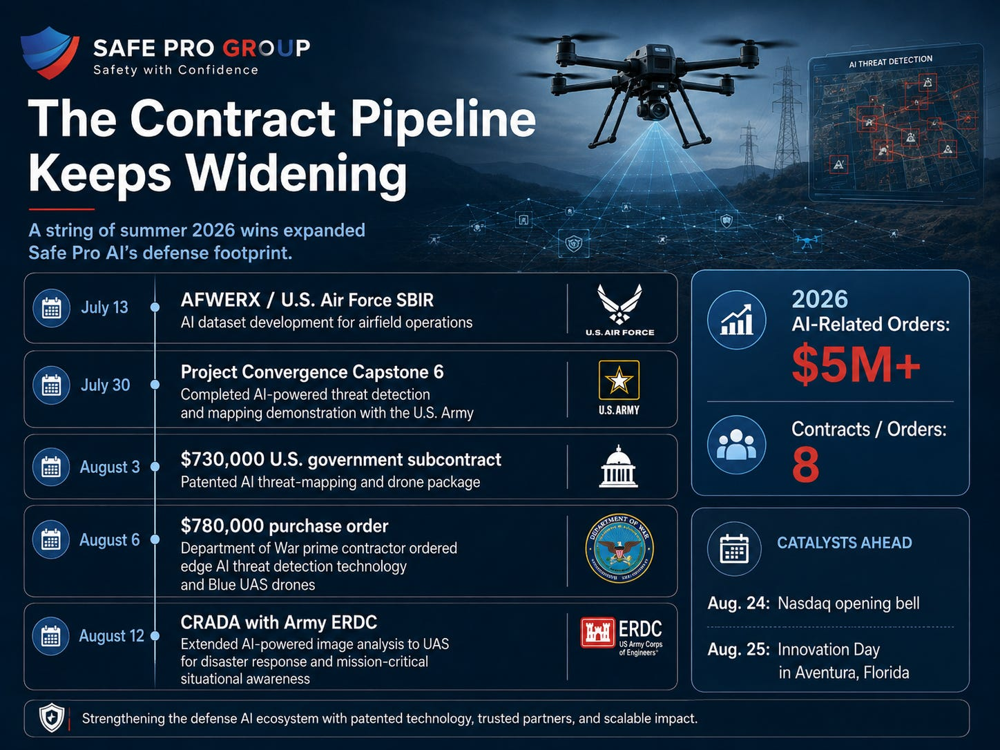
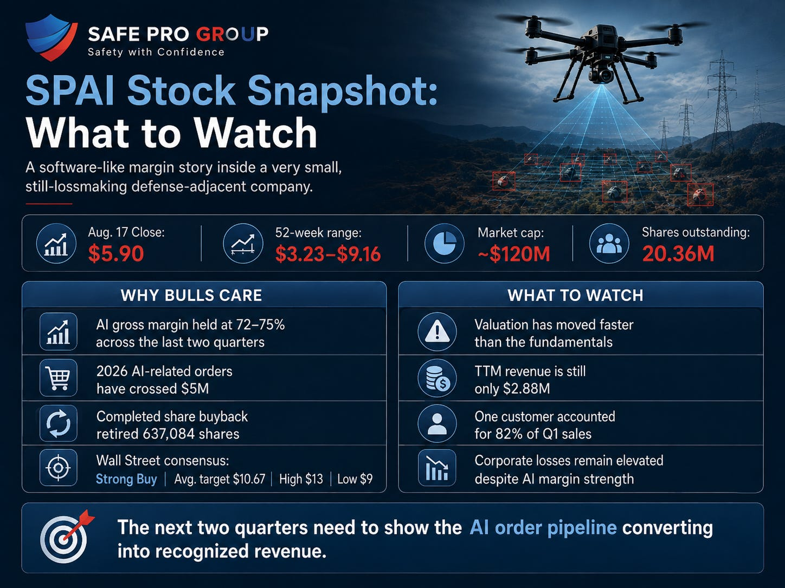

Drones are the next major trend that will follow the AI surge but these two things are not mutually exclusive, far from it. Safe Pro Group combines both to create AI Software that utilizes drones to map almost everything. Most names in the drone and counter-UAS trade sell hardware and chase thin margins on it. Safe Pro Group sells hardware too, but the number that’s key sits in its AI segment, where gross margin hit 75% in the second quarter of 2026, up from 72% in the first. That figure, next to eight government contracts and more than $5 million in 2026 AI-related orders, is why SPAI stock has nearly doubled in market value since July. We’ve been following it for much longer.
Safe Pro Group runs three business lines: Safe-Pro USA (body armor and blast protection), Airborne Response (drone inspection services for utilities), and Safe Pro AI, which builds the Safe Pro Object Threat Detection (SPOTD) platform and the NODE and NODE-X edge-processing hardware. SPOTD takes drone video and imagery, runs it through machine learning models trained to spot landmines and unexploded ordnance, and outputs a geo-tagged threat map. The company says the system now identifies more than 150 types of landmines and UXO and has logged over 2.9 million analyzed images, more than 54,328 identified threats, and coverage of roughly 37,900 acres, most of it from nearly three years of deployment in Ukraine.

The Numbers Behind the SaaS Framing
Safe Pro Group reported second-quarter 2026 revenue of $1,332,074, up 1,336% from $92,753 in the same quarter of 2025. U.S. Army-contracted NODE orders and services revenue pushed AI subsidiary sales up more than 3,084% year over year on their own. That followed a first quarter in which total revenue hit $1,220,129, up 560% from $184,802 a year earlier, with the AI segment climbing past 2,400% growth off a roughly $40,000 base. Combined, the first six months of 2026 brought in about $2.55 million in revenue, more than four times all of 2025’s $606,681. Trailing twelve-month revenue now stands at $2.88 million, up 92.6% year over year, against a company that posted a net loss of $14.41 million and an EPS of negative $0.73 over that same stretch. We believe we are on a clear path to positive EPS as the business becomes more utilized in government activities across the world. Demining alone is a $10 billion dollar business.

Consolidated gross margin has stayed elevated alongside that growth, and management has now posted two straight quarters of AI product margins above 70%. Drone manufacturers typically run 20-30% gross margins on hardware. SPAI’s AI segment ran 72-75% over the same two quarters. Government contracts are paying for that software layer. CEO and Chairman Dan Erdberg called the results validation of “a large and urgent unmet need for real-time, ground-truth situational awareness across the defense sector,” pointing to disciplined capital allocation, including a completed share buyback, as evidence of controlled growth.
That buyback is huge because its extremely rare for small cap growth companies to do. Safe Pro Group finished its Board-approved repurchase program during the second quarter, retiring 637,084 shares in the open market total, after buying back 474,630 of those in the first half of the year alone. Shares outstanding now sit at 20.36 million, down slightly from 20.6 million in mid-July, a contrast with many small-cap defense names that lean on constant share issuance to fund growth.
The Contract Pipeline Keeps Widening
The government pipeline that built the Q1 and Q2 numbers hasn’t slowed down. Safe Pro picked up a U.S. Air Force SBIR contract through AFWERX on July 13, funding AI dataset development for airfield operations. Two weeks later, on July 30, the company completed its role in the Army’s Project Convergence Capstone 6, demonstrating AI-powered threat detection and mapping alongside active-duty units. A $730,000 U.S. government subcontract for its patented AI threat-mapping and drone package followed on August 3. Three days after that, a new Department of War prime contractor placed a $780,000 purchase order for a bundle of edge-based AI threat detection technology and multiple Blue UAS drones, with work starting in the third quarter and running into the first quarter of 2027. Safe Pro closed out the run on August 12 with a Cooperative Research and Development Agreement alongside the Army’s Engineer Research and Development Center, extending AI-powered image analysis to uncrewed aerial systems for disaster response and mission-critical situational awareness beyond the battlefield.

By early August, the company said its 2026 AI-related orders had crossed $5 million across eight separate contracts, spanning the Army, the Air Force, and now a Department of War prime contractor relationship that sits outside its existing Army and Forterra work. Safe Pro is set to ring the Nasdaq opening bell on August 24 and host a live-fire Innovation Day in Aventura, Florida the following morning, pairing the investor-relations push with a field demonstration rather than a press release alone.
What Wall Street Sees
Coverage on SPAI stock remains thin but real, and it hasn’t caught up to the run in the stock. Three analysts carry a consensus Strong Buy rating with an average 12-month target of $10.67, implying upside above 80% from the August 17 close near $5.90. Northland Securities’ Michael Latimore holds the high end at $13, Lake Street’s Max Michaelis sits at $9, and a third analyst rounds out the range. That target still sits above the stock’s own 52-week high of $9.16, so even the low end of Wall Street’s expectations assumes SPAI breaks into territory it has never traded at. With only three analysts covering a company this small, treat the consensus as directional sentiment rather than a forecast to size a position around.

What to Watch
Valuation has moved faster than the fundamentals. SPAI’s market cap has grown roughly 50% since mid-July on a stock that was already pricing in a lot of future growth. Revenue, while compounding fast in percentage terms, is still running at a $2.88 million trailing-twelve-month pace. The next two quarters need to show the AI order pipeline converting into recognized revenue at a similar clip, or the multiple the market is now paying gets harder to justify.
Customer and contract concentration. Safe Pro’s Q1 10-Q disclosed that one customer accounted for 82% of quarterly sales. The August contract wins spread that base across the Army, the Air Force, a Department of War prime, and now the Army’s own research arm through the ERDC agreement, which reduces single-customer risk on paper. Whether that becomes a diversified revenue base, or stays several small checks from the same few government channels, is still an open question.
Losses still outrun the AI segment’s margin narrative. A 72-75% AI gross margin is real, but it sits inside a company that posted a $14.41 million trailing net loss. The completed buyback shows capital discipline on the share-count side, but investors should watch whether operating losses narrow as AI revenue scales, or whether corporate overhead keeps the bottom line red even as the AI unit’s economics improve.
It’s important to note that Safe Pro Group is not Palantir. Honestly, the market cap is a rounding error next to PLTR’s but that doesn’t make it any less of an opportunity for investors. The business is extremely solid: a defense-adjacent company whose economics look like software, not hardware, now trading at a valuation that has partly caught up to that story since ZHG first flagged the gap. Whether it keeps catching up depends on whether the next two quarters of Safe Pro AI revenue hold the same shape as the last two. We believe it will.